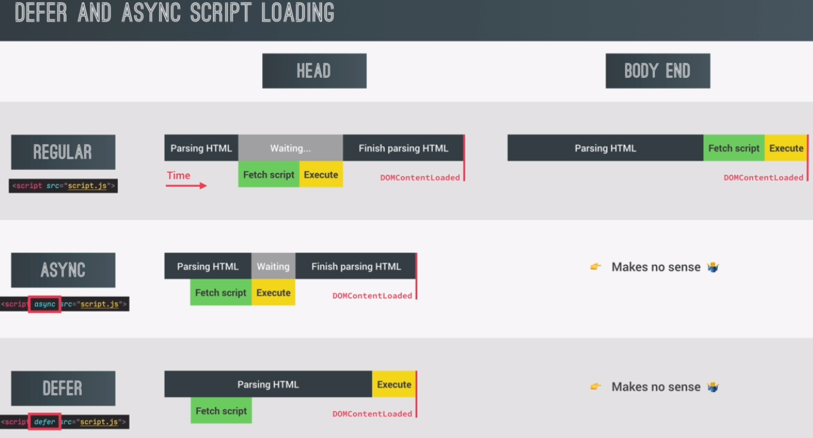

If JavaScript is placed in the head of HTML, it will load first and HTML will wait until the JavaScript is finished loading before it loads.
This is a bad idea as it will impact page performance.
This also executes the script before the DOM is ready.
The script should always be placed before the closnig body tag, however, this is still not perfect, because the script could have been downloaded before, while the HTML was still being parsed.
script is loaded at the same time as the HTML is parsed.
However, the HTML parsing still stops for the script execution. So the script is actually downloaded asynchronously. But then it's executed right away in a synchronous way. And so the HTML code has to wait for being parsed.
one important thing about loading an async script is that the DOM content loaded event will not wait for the script to be downloaded and executed. So usually, DOM content loaded,
usually, DOM content loaded, waits for all scripts to execute. But scripts loaded with async are an exception. So with async, DOM content loaded is fired off as soon as the HTML finishes parsing. And this might actually happen when a big script takes a long time to load, like in this example.
Another very important aspect is that async scripts are not guaranteed to be executed in the exact order that they are declared in the code. So the script that arrives first gets executed first.
for third party scripts, where the order does not matter, for example, an analytics software like Google Analytics, or an ad script, or something like that, then in this case, you should totally use async.
for any code that your own code will not need to interact with async is just fine.
when deferring what happens is that the script is still loaded asynchronously. But the execution of the script is deferred until the end of the HTML parsing. So in practice, loading time is similar to the async attribute, but with the key difference that would defer the HTML parsing is never interrupted, because the script is only executed at the end.
using defer, on the other hand, forces, the DOM content loaded event to only get fired after the whole script has been downloaded and executed. And so this is the more traditional way that this event works.
using the defer attribute guarantees that the scripts are actually executed in the order that they are declared or written in the code.
you should use it for your own scripts. And for scripts where the order of execution is important.
For example, if your script relies on some third party library that you need to include, you will include that library before your own script, so that your script can then use the library's code. And in this case, you have to use defer and not async. Because defer will guarantee the correct order of execution.
This will not work.
Beause in the body, fetching and executing the script always happens after parsing the HTML anyway. And so async and defer have no practical effector.